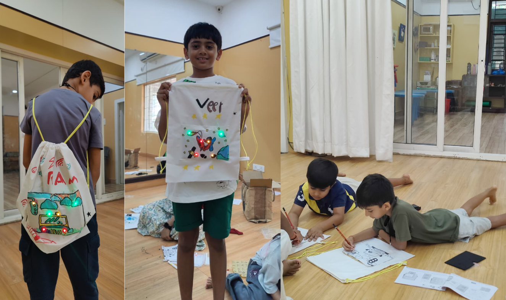
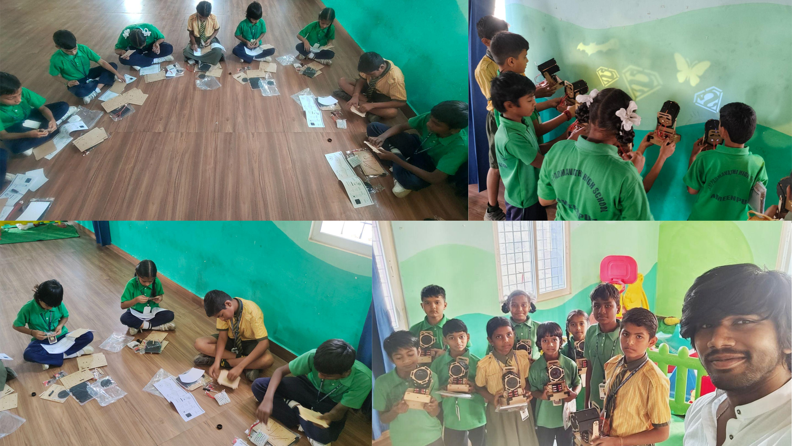
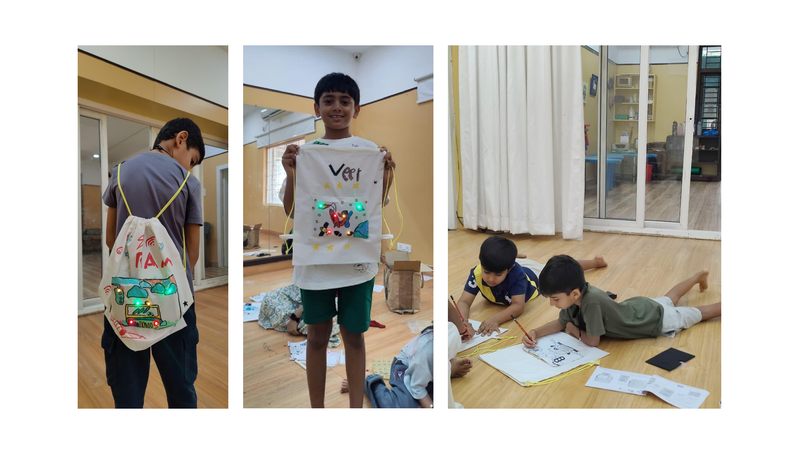

.webp)
During my industrial product development internship at OiMake, I worked on the end-to-end design lifecycle for hands-on STEAM kits where children build, paint, and light up real functional objects. Designing for children requires solving a dual-stakeholder equation: the parent seeks educational value, screen-free focus, and safety, while the child demands immediate tactile excitement, independence, and pride in a finished usable creation.
Children retain 75% of what they learn through practice and 90% when immediately applying knowledge through physical building (National Training Laboratories).
Physical manipulation of 3D objects, layers, and circuitry strengthens neural pathways, spatial reasoning, and academic problem-solving confidence.
Precise tactile movements — component insertion, custom painting, slotting tabs, and threading — develop critical fine-motor coordination.
Navigating physical assembly challenges fosters experimental hypothesis-testing, cause-and-effect understanding, and resilience without digital distraction.
Completing a functional, illuminated wearable or decor object provides a lasting sense of achievement, encouraging self-driven making habits.
Combining visual arts with electronics simultaneously activates both analytical logic and creative expression in young learners.

Before defining product geometry, structured observation workshops were conducted with children aged 8 to 14 across school design clubs, domestic home environments, and after-school activity centers. The objective was to map the natural arc of a child's engagement with unfamiliar components, measure fine-motor dexterity limits, and identify instructional friction points.
Tactile-First Instinct: Children touch, rotate, and attempt to assemble physical parts immediately before reading any written text. Products must reward this instinct with intuitive geometry.
Social Dynamics & Comparison: When children build side by side, activity naturally becomes collaborative. Subtle variations in speed, light, and decoration trigger healthy peer discussion.
Zero Adult Interventions: Instructional friction caused by small screws or complex text leads to parental takeover. The experience required 100% visual, step-by-step vector guidance.


Educational toy purchases in the Indian market are heavily parent-driven. A successful product must satisfy both the buyer (parent) and the user (child).


